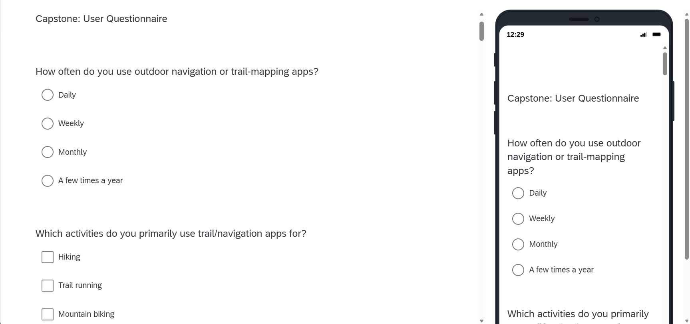
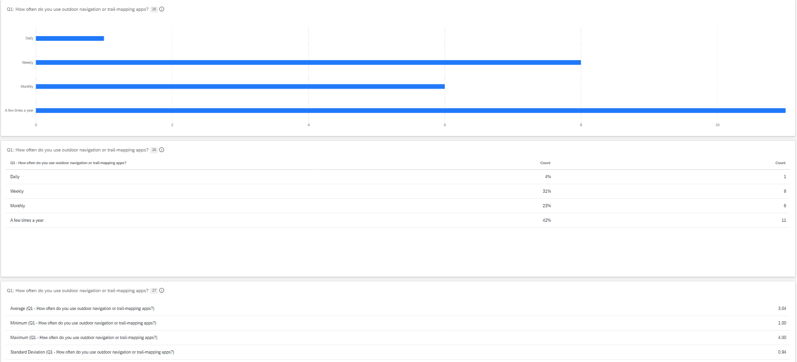

User Feedback
The primary goal of our early design work was to understand what is missing from existing trail apps and identify the qualities users care about most before we finalized our concept.
Research Goals
- Consider the users of the system and which qualities are most important to them.
- Understand the context in which the system will be used, including when, where, and how people access trails and trail data.
- Gather direct feedback from users and stakeholders using a common elicitation method.
Method
We gathered feedback using a Qualtrics questionnaire and follow-up interviews with stakeholders. In total, we collected 27 questionnaire responses and completed 3 interviews. The interview participants had varied levels of outdoor experience and app familiarity, which helped us capture both casual and experienced trail users.
Our research focused on understanding how users currently discover trails, how they decide whether a route is trustworthy, and what they value in a trail-mapping experience. We also explored how contributors, casual users, and administrators would each interact with the system.

User Groups
We identified three main user groups for the system:
- Admin users: Responsible for reviewing and approving route submissions or edits. These users are most active during regular business hours and rely on desktop workflows for efficient review.
- Contributing users: Users who submit routes, photos, and updates after admin review. They are more engaged with the app and are willing to contribute content to the trail system.
- Non-contributing users: Casual users who primarily browse and use the app without creating content. This is the largest user group and they are most likely to use the mobile app.
Sample Questions
Sample questions from the survey included:
- How often do you use outdoor navigation or trail-mapping apps?
- Which activities do you primarily use trail/navigation apps for?
- How comfortable are you with using mapping and navigation software?
- When deciding whether to use a trail or route you haven't used before, what information is important to you?
- Have you ever encountered a trail or route in a mapping app that was inaccurate, outdated, inaccessible, or unsafe?
Sample interview questions included:
- How would you describe your phone usage?
- Do you enjoy the outdoors?
- How often do you find yourself outdoors each week?
- Do you often share fun hiking or offroad routes with friends and family?
- Do you often take photos or videos while hiking or driving off-road?
Key Insights
- Users care most about route accuracy and safety. People want to know whether a trail or route is reliable, up-to-date, and safe before using it. Inaccurate or unsafe routes were a major concern across all participants.
- There is strong interest in crowdsourced route creation. Participants were generally supportive of allowing users to add and edit routes, photos, and trail information.
- A streamlined review process is important. Interview participants believed a review time of about a week would be reasonable for human review, while an automated review could reasonably happen in less than a day.
- Users want a minimalist, easy-to-navigate app. Several participants noted that existing apps often hide useful features or present too many options. They preferred a cleaner interface that keeps the most important tools easy to find.
- Route creation should be approachable and not time-consuming. Users wanted a route editing workflow that could be completed quickly, with the goal of a route being editable in under 10 minutes.
- Users want essential trail information available up front. When evaluating an unfamiliar trail, people prioritized difficulty, trail conditions, hazards, accessibility, and route quality.
Questionnaire Results
The survey results revealed several patterns in user behavior:
- Usage frequency: 65% of respondents used outdoor navigation or trail-mapping apps only a few times a year or monthly.
- Primary activities: Hiking was the most common use case (77%), followed by camping (50%), with additional use for trail running, mountain biking, backpacking, and skiing.
- User experience level: Most users described themselves as intermediate (46%) or experienced (35%) trail users.
- Comfort with mapping tools: 58% of respondents felt comfortable using mapping and navigation software.
- Device use: 69% of users primarily used a smartphone for trail navigation.
- Route discovery: Many users found trails through trail apps, websites, or recommendations from friends and family.
Overall, the feedback suggested a clear direction for the project: users want a trail app that is simple, trustworthy, and efficient, with strong support for route accuracy, quick editing, and a clear review workflow.
